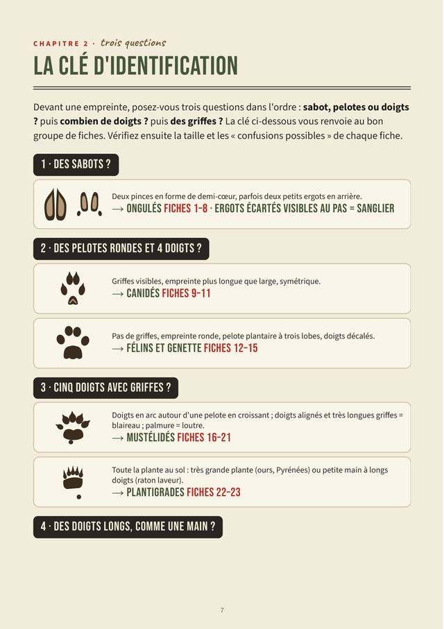
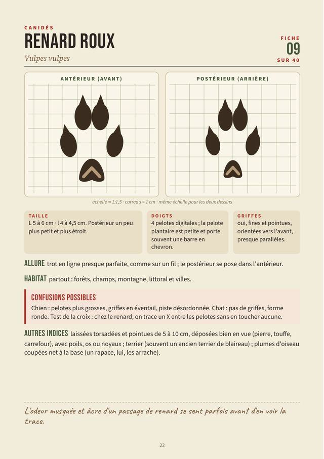
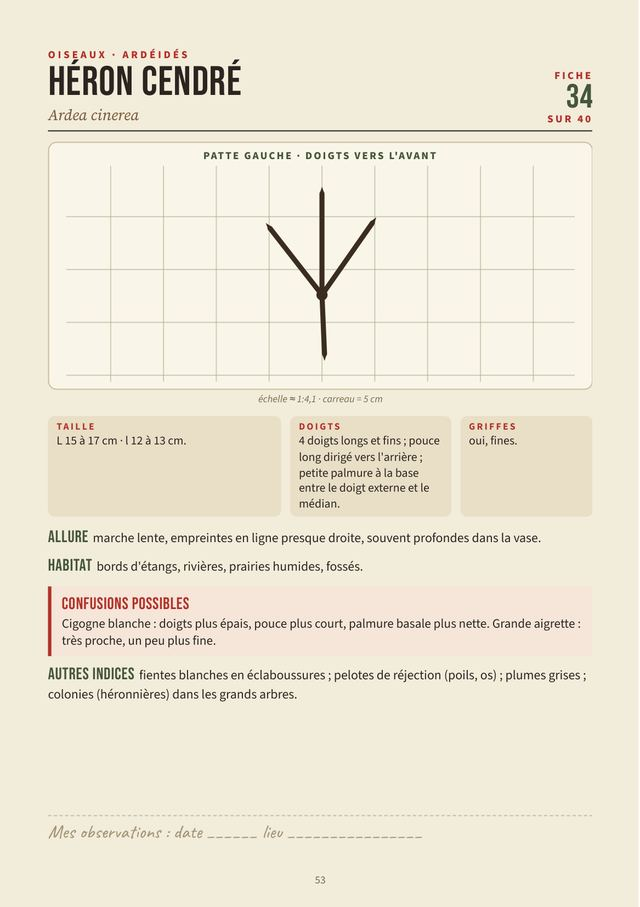
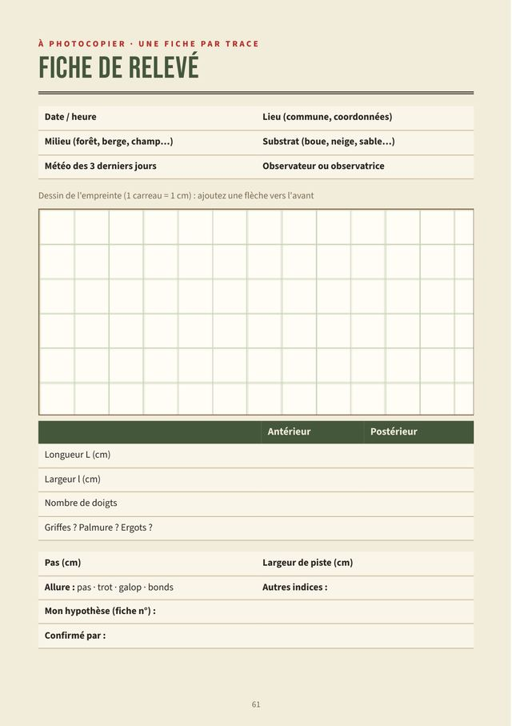
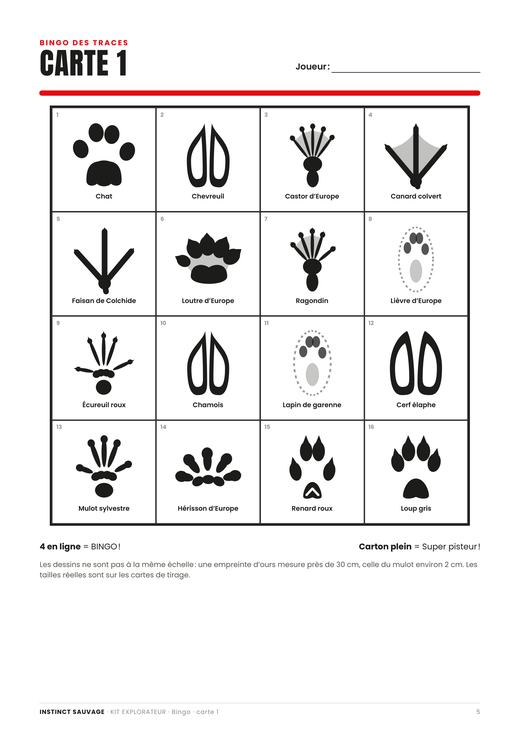
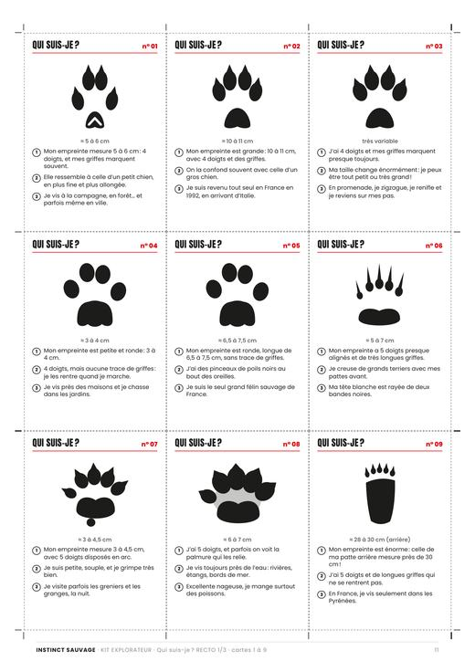
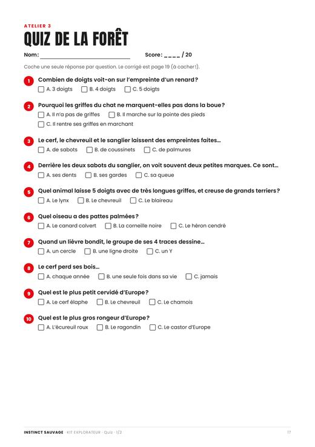
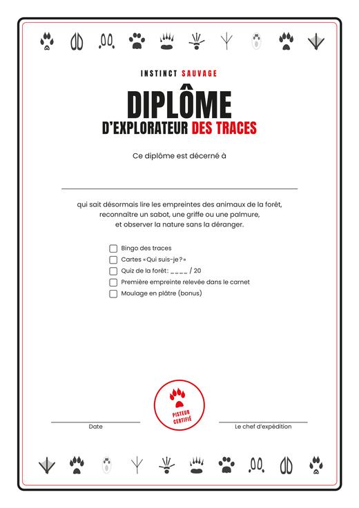

Un guide de terrain pour reconnaître les traces de 40 animaux de France et d'Europe : empreintes dessinées sur quadrillage de 1 cm, crottes et autres indices, et les confusions à éviter. À garder sur le téléphone ou à imprimer pour la prochaine balade.
Je veux le guide
Vous la remarquez au bord d'un chemin, dans le sable d'une rivière ou dans la neige fraîche. Chien ou renard ? Chevreuil ou mouton ? Les gros guides restent à la maison, il n'y a pas toujours de réseau, et les photos trouvées en ligne indiquent rarement la taille.
Sans mesure, une empreinte de chat et une empreinte de lynx se ressemblent beaucoup. La taille change tout.
Chien ou renard, chevreuil ou mouton, lièvre ou lapin : ce sont souvent les mêmes doutes qui reviennent.
Crottes, poils, restes de repas, terriers : les autres indices confirment souvent ce que la trace laisse deviner.
Trois pattes avant tirées du guide, dessinées à la même échelle. Chaque carreau représente 1 cm. Regardez les doigts, les griffes et la taille, puis vérifiez.
Renard rouxVulpes vulpes
L 5 à 6 cm · l 4 à 4,5 cm. Postérieur un peu plus petit et plus étroit. 4 pelotes digitales.
Chevreuil européenCapreolus capreolus
L 4 à 5 cm · l 3 cm environ. 2 pinces étroites et pointues.
Blaireau européenMeles meles
Antérieur L 4,5 à 7 cm · l 5,5 à 6,5 cm. 5 doigts presque alignés, serrés.
Dessins schématiques réalisés pour le guide d'après les mesures publiées. Sur le terrain, une empreinte varie selon le sol, l'allure et l'individu.
Le guide part des bases, vous donne une méthode, puis une fiche par espèce, toujours construite de la même façon pour comparer facilement.

La clé d'identification Les autres indices
Les autres indices Fiche 01 · Cerf élaphe
Fiche 01 · Cerf élaphe
Fiche 09 · Renard roux
Fiche 34 · Héron cendré
Fiche de relevé à photocopierPour transformer la balade en jeu avec des enfants de 6 à 12 ans, à la maison ou en classe. Un PDF A4 de 23 pages à imprimer :

Bingo des traces
Cartes « Qui suis-je ? »
Quiz de la forêt
DiplômeJuste après le paiement, Gumroad affiche un lien de téléchargement et vous l'envoie aussi par e-mail. C'est un fichier PDF : rien n'est envoyé par la poste.
Oui. Le guide est au format A5 : il s'imprime tel quel, ou deux pages par feuille A4. Sur chaque fiche, le quadrillage indique les centimètres, ce qui permet de lire la taille même à l'écran ou après réduction.
40 espèces de France et d'Europe : ongulés, canidés, félins, mustélidés, ours et raton laveur, rongeurs, lièvre, lapin, hérisson et sept oiseaux. Certaines, comme l'ours, le loup ou le lynx, ne vivent que dans quelques régions : chaque fiche précise l'habitat.
Les mesures, critères et indices ont été recoupés dans des sources reconnues : OFB, INPN (MNHN), ONF, La Salamandre et des guides de référence. La liste complète est à la fin du guide. Les dessins sont des schémas réalisés pour le guide à partir de ces mesures.
Le guide est écrit pour les adultes et les adolescents, et se lit très bien en famille. Pour les 6–12 ans, le Kit Explorateur propose des jeux, des cartes et un diplôme.
Un PDF A4 à imprimer, proposé en option à 7,90 € sur la page de paiement : bingo des traces, cartes « Qui suis-je ? », quiz avec corrigé, carnet d'explorateur, moulage en plâtre et diplôme.
Écrivez-nous à luizeduardodudu05@gmail.com en indiquant l'adresse e-mail utilisée pour l'achat. Nous vous répondrons pour trouver une solution.
40 espèces, leurs empreintes sur quadrillage, leurs indices et leurs confusions, dans un PDF à garder sous la main.


Trois étapes, rien à attendre